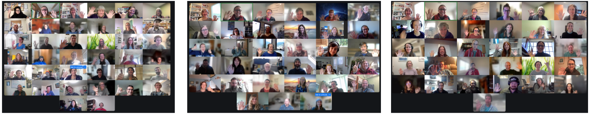
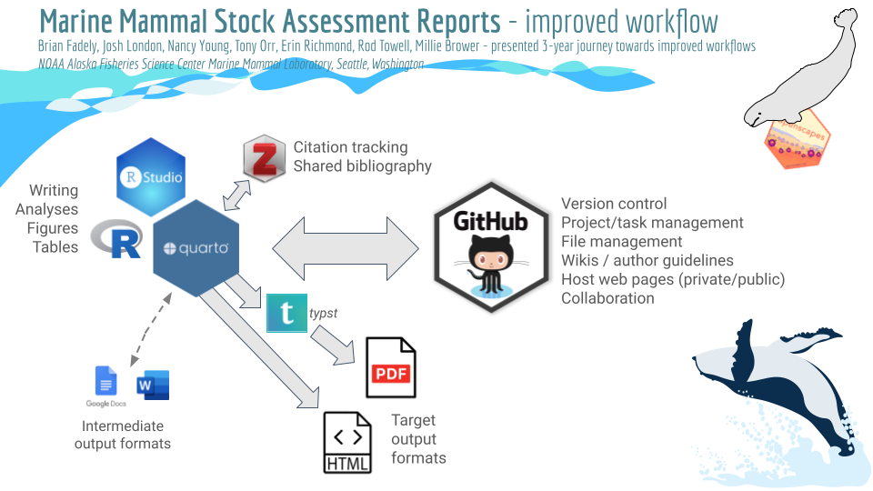
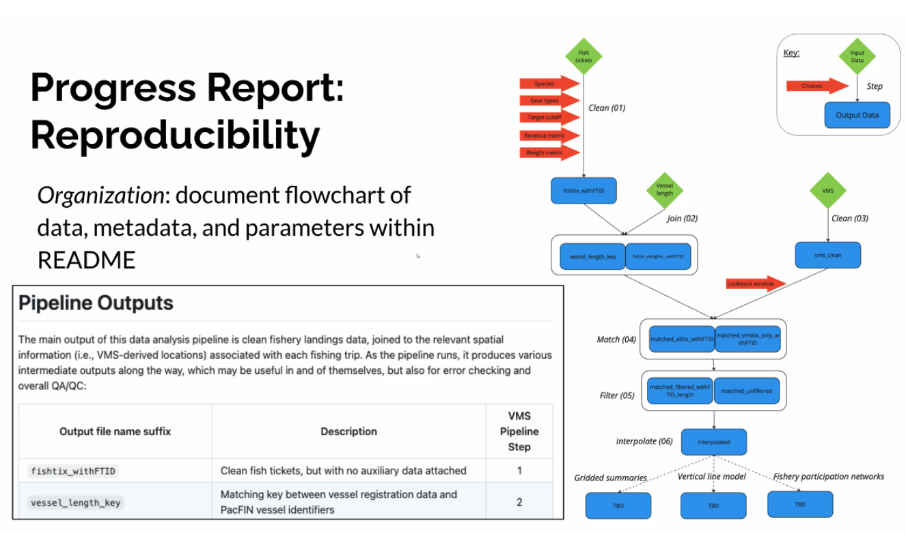
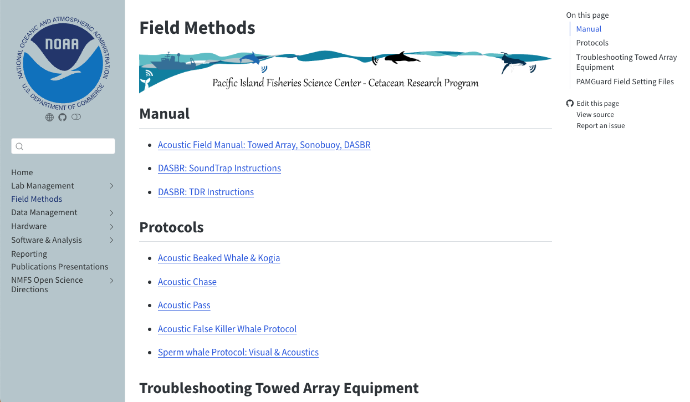
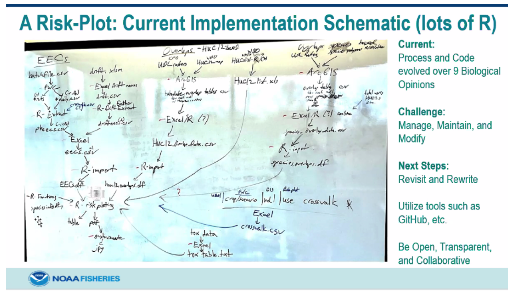

Open Science Momentum at NOAA Fisheries
Eli Holmes ![]()
Jonathan Peake
Amanda Bradford
Lynn Dewitt
Brian Fadely
Craig Faunce
Brooke Hawkins
Joshua London
Emily Markowitz
Jennifer McCullough
Craig Millard
Margaret Siple
Stefanie Butland
Julie Lowndes
and the NMFS Openscapes Mentors
In Fall 2024, we led 3 concurrent Openscapes Champions Cohorts for NOAA Fisheries. These were the 13th Cohorts for NOAA Fisheries involving nearly 500 staff and affiliates! This post is a summary and celebration of some their work.
Quicklinks:
- Cohort webpage
- Browse stories about the NOAA Fisheries Openscapes framework
Cross-posted at the NOAA Fisheries Science Blog and openscapes.org/blog
Data and Workforce Modernization Is Happening
A common saying when people talk about modernizing is: “Technology is easy; people and social change are difficult.” At NOAA Fisheries, we’ve seen that real change is possible when technical and social infrastructure are prioritized together. Modernization efforts not only include data and technical infrastructure, but also the workforce—providing staff with the necessary skills and collaborative tools to drive these changes. One way we are doing this is the Openscapes Champions program. Openscapes creates a space where members from multiple teams come together to develop joint processes to improve overall project success.
Data modernization at NOAA Fisheries means getting information out faster so people can use this information to meet their needs. It includes data, reports, and analyses and making these more efficient to create, share, and update consistently, relieving staff time. It also makes it more transparent both to the team and people interested in the information.
“I’ve already seen Openscapes change how NOAA Fisheries is doing things. There’s a national peer network for learning, getting help, sharing tools, fixing things, and innovating. I see this continuing to grow as the community grows and people see what’s possible. The emphasis on open, reproducible science will make it easier for partners and the public to engage in our work. Openscapes is contributing momentum to implementing tools that we need to do our jobs better.” – Phoebe Woodworth-Jefcoats, Pacific Islands Fisheries Science Center
Over two months in fall 2024, 120 NOAA Fisheries staff tackled projects to improve or restructure data workflows through the Openscapes Program. They made substantial progress on complex workflow transformation goals, such as:
- Transitioning to contemporary data storage solutions;
- Automating large data-heavy reports with programmatic code and version control;
- Developing coordinated science program onboarding and operating procedures that are harmonized across NOAA Fisheries;
- Prototyping cloud computing workflows for new data streams from satellites and ocean modeling.
Program leads organized and taught lessons and skill-building workshops, led small group reflection time, and facilitated coworking sessions. During coworking sessions, participants could brainstorm and make progress on what mattered to them with others working on similar tasks. We can solve problems and complete tasks faster together in a social and collaborative way by reaching outside our individual work circles.

How the Openscapes Champions Program Supports Change
The Openscapes Champions program is a remote-by-design, cohort-based mentorship program. It helps teams reimagine data analysis and stewardship as a cooperative effort, using modern reproducible science skills and tools within collaborative networks. These networks are critical in breaking down silos that lead to inefficiencies and duplication and that prevent peer-learning and problem-solving. The program focuses on open science and data modernization via weekly facilitated coworking sessions. The goal is to develop and strengthen a teaching and learning culture within teams and organizations. This program is not only for scientists; admin, IT, and other management-focused staff have worked on workflow-related projects or to improve management of technical teams.
During the sessions, Champions learned from the successes of past Champions Program participants who transformed the Alaska Marine Mammal Stock Assessment Report process and the California Current Ecosystem Status Report process. Openscapes Mentors from across NOAA Fisheries offices also supported the weekly sessions with their expertise in analyzing big data, software development, and automation.

What NOAA Staff Achieved on Projects Across the Agency
The Champions program is a place for people to solve challenges together. Everyone works on mission-driven tasks for data workflow modernization that can seem (or are) insurmountable alone. Participants presented their work-in-progress efforts from the program in the fifth and final call. The progress these teams made was impressive, representing a deep investment in skills and people.
Improved Onboarding for Complex Science Initiatives
Abigail Golden, Owen Liu, and Brooke Hawkins focused on developing a workflow for improving onboarding of new staff to a data processing pipeline for vessel monitoring system (VMS) data. They developed an onboarding workflow that would help new staff understand and contribute to the VMS pipeline. They first focused on improving the project README, developing checklists and building a visual of the onboarding pipeline. Siloed workflows and lack of cross-team awareness created inefficiencies in complex initiatives involving multiple use cases.

Reusable Documentation for At-Sea and Lab Protocols
Jennifer McCullough, Catherine Berchok, Rebecca Van Hoeck, Julia Zeh, Candice Emmons, Cory Hom-Weaver, Isabella Garfield, and others built lab manuals for the Passive Acoustic Monitoring strategic initiative. They focused on deliverables for the Pacific Islands Fisheries Science Center, using a template made by colleagues at the Southwest Fisheries Science Center during a previous Openscapes Champions Cohort. With dedicated learning time provided by the Champions program and Openscapes Mentors on hand to help, the Pacific Islands team quickly became confident with new technical skills to build documentation for their scientific methodology using Quarto and GitHub. The team also focused on communication, securing buy-in across the agency so these lab manuals can be used across NOAA Fisheries!

Simplifying Risk Assessment for Pesticides
David Baldwin, Holly Suther, and Karrin Goodman from the Office of Protected Resources aimed to further automate the generation of Risk-Plots for pesticides and crops and improve their ability to manage, maintain, and modify these plots. Risk-Plots combine many separate effects and exposure groups and the current process and code have evolved to include nine biological opinions. The team presented how they had begun work by mapping out their current process, and were then able to identify next steps.

Onward: Continuing to Modernize Data Workflows
We are working to modernize our data infrastructure and workforce together, and Openscapes is supporting this change. We are building on the momentum and products from previous cohorts since 2020. This momentum has led to collaborations as teams found they had shared tasks and needs, and common skills and workflows to be able to work more easily together. This led to the creation of templates and examples that accelerated the work in the 2024 cohorts. Beyond lines of code, teams and individuals have learned how to run more productive meetings and accomplish work via paired writing and programming. Skills such as shared and co-written agenda notes during meetings and regular coworking sessions, create a dynamic session where peers can ask for and get help. These new collaboration skills are some of the strongest habits that our staff bring to their work.
This work is not happening in isolation. Federal science agencies, including NOAA, have many mandates around open science and open data. The Openscapes Champions program is one of the initiatives helping to enhance transparency, collaboration, and accessibility of federally funded scientific information.
Citation
@online{holmes2025,
author = {Holmes, Eli and Peake, Jonathan and Bradford, Amanda and
Dewitt, Lynn and Fadely, Brian and Faunce, Craig and Hawkins, Brooke
and London, Joshua and Markowitz, Emily and McCullough, Jennifer and
Millard, Craig and Siple, Margaret and Butland, Stefanie and
Lowndes, Julie and the NMFS Openscapes Mentors, and},
title = {Open {Science} {Momentum} at {NOAA} {Fisheries}},
date = {2025-07-14},
url = {https://openscapes.org/blog/2025-07-14-nmfs-champions-2024/},
langid = {en}
}